AXSYNC
Plan, link and reschedule your work on an interactive timeline. Project, Manufacturing, Time Off, and any other model of your database.
Odoo 16 Odoo 17 Odoo 18 Odoo 19 Odoo 20
Planning lives on a timeline, yet most screens show it as a list of dates. Gantt View Pro puts every task, manufacturing order, work order and time off request on one chart. Move a bar and the dates are saved. Stretch it and the duration changes. Draw a line to another bar and you have a dependency. When a task in automatic mode is pushed back, everything waiting for it follows, and Undo puts it all back.
Drag to move, resize or update progress. Click the timeline to schedule an unscheduled record. Undo any change.
Finish to Start, Start to Start, Finish to Finish and Start to Finish, with lag. Dependent work follows automatically.
Critical path, deadlines, constraints and late bars, right on the timeline.
Resource panel with planned hours and a capacity heat map based on your working schedule and public holidays.
Excel, PDF, PNG, JSON, MS Project XML, Primavera P6 and iCal. Import plans from Excel or JSON.
Add a Gantt view to any menu from the Gantt Setup screen, including your custom models.
See the chain of work that decides your delivery date. Bars and arrows on the critical path turn red.
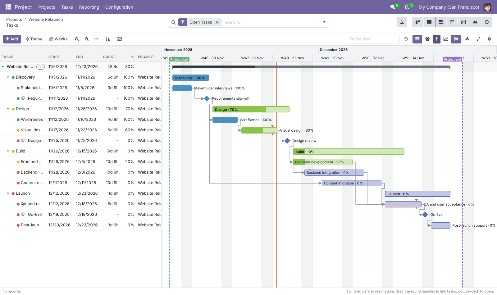
Task count and planned hours per person, work center or employee. Red cells are periods over capacity.
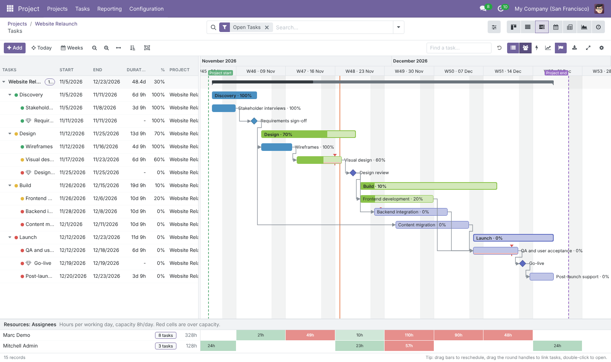
The blue curve shows where the plan should be, the red line where it really is today.
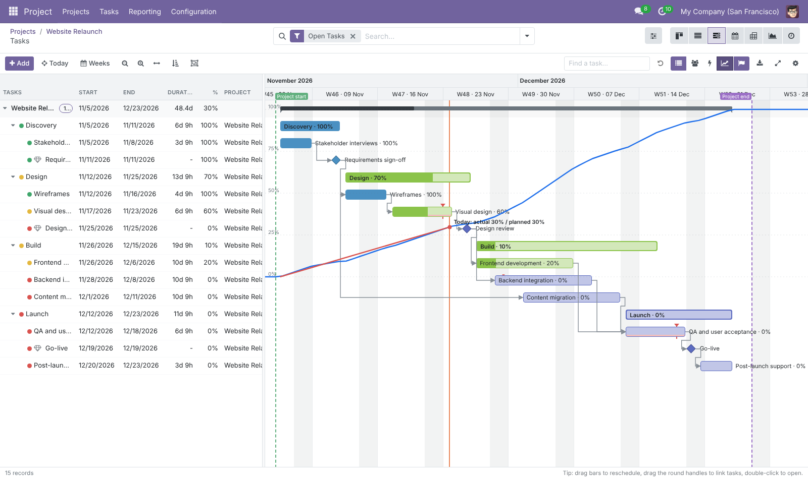
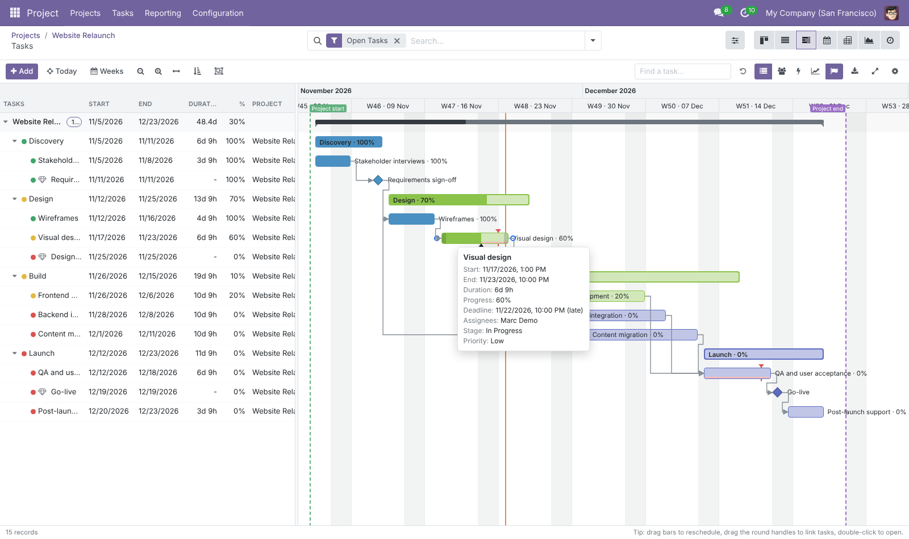
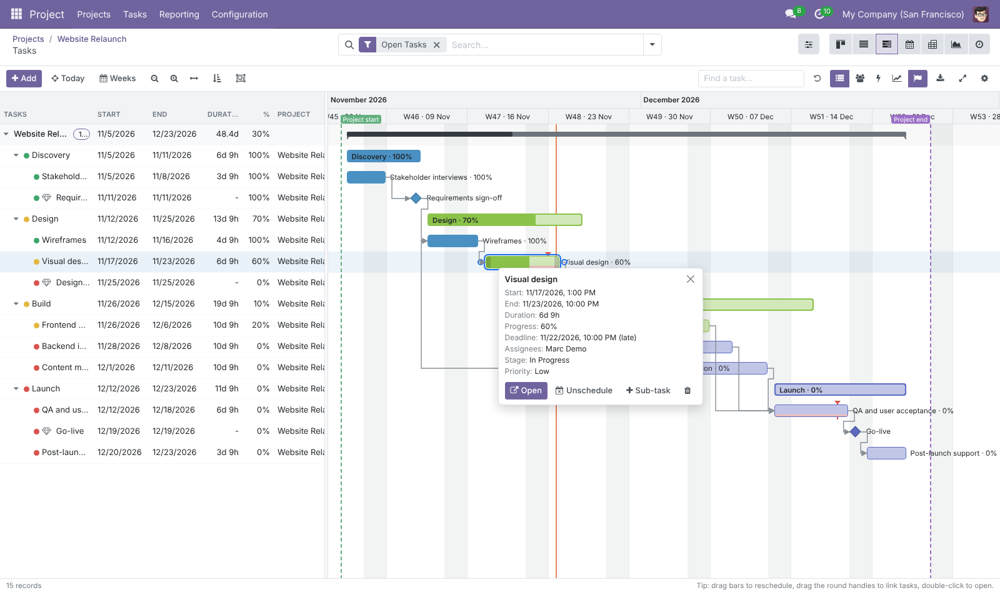
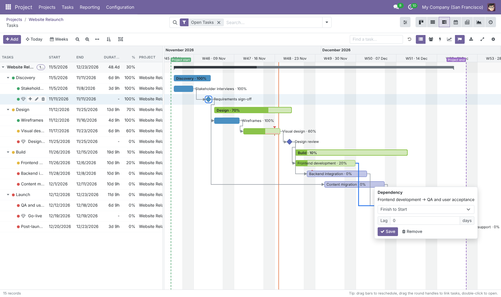
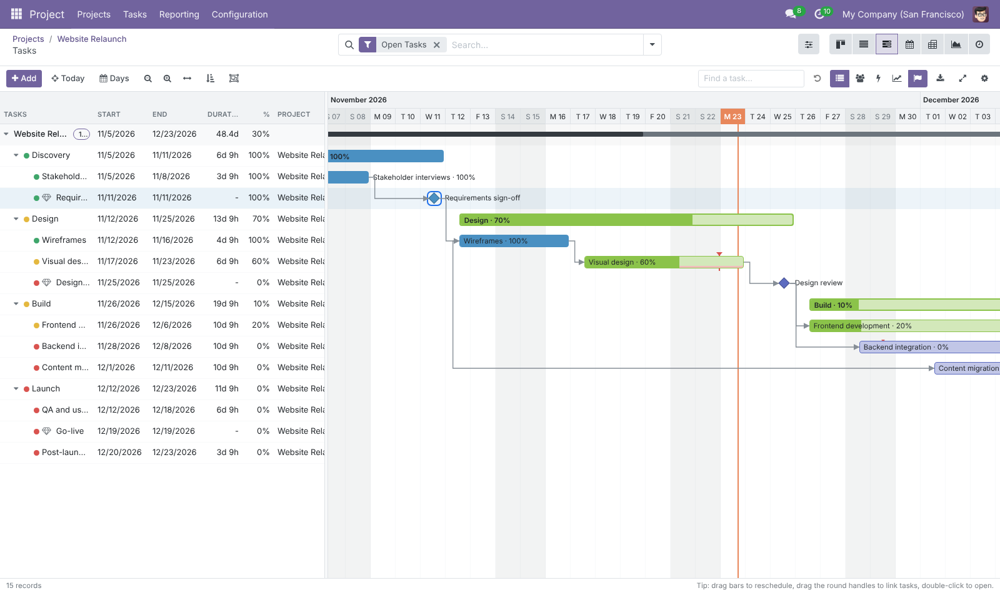
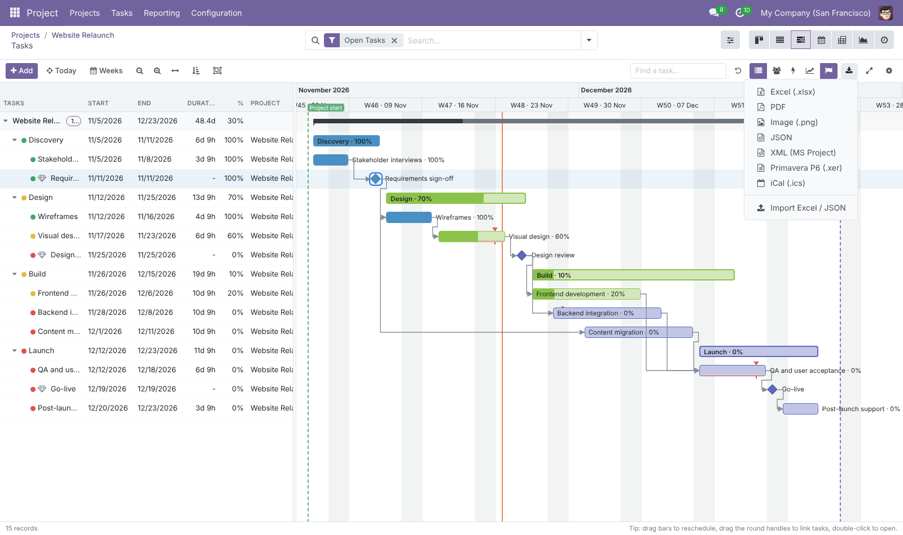
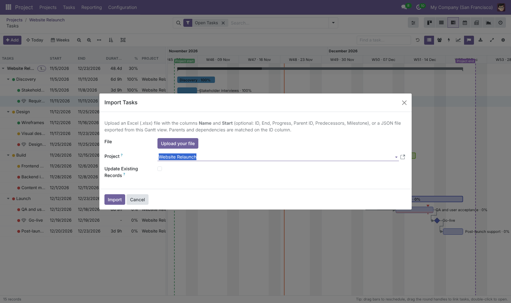
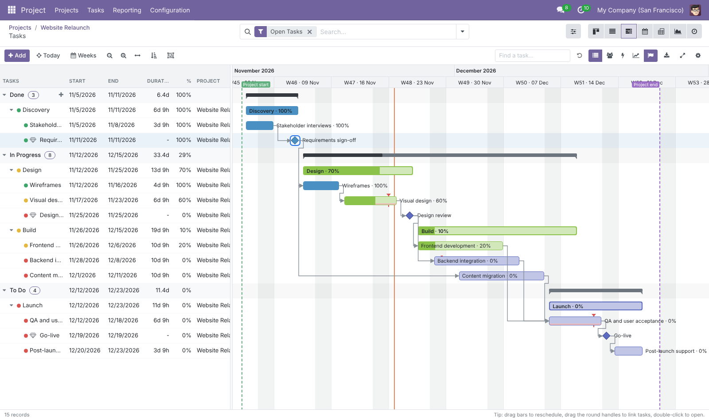
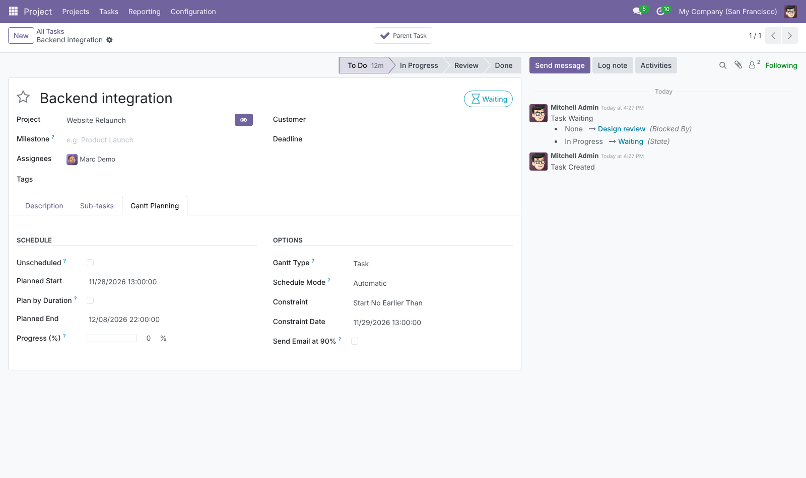
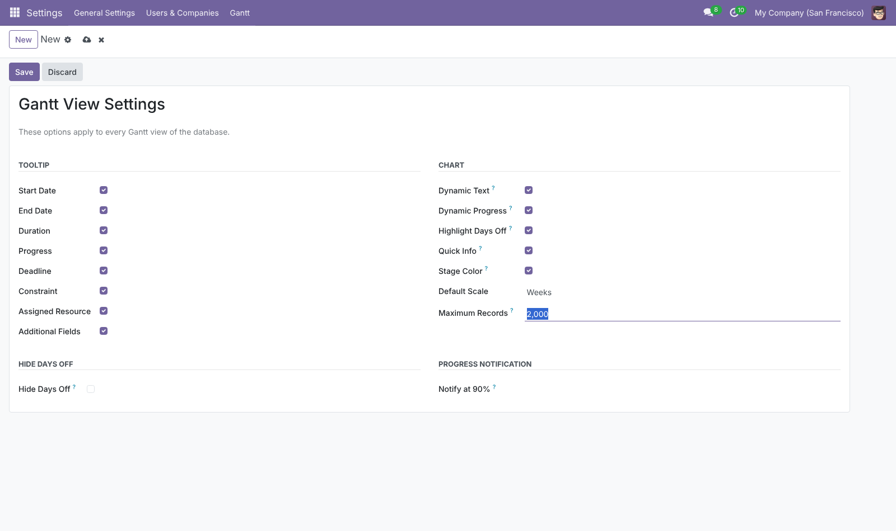
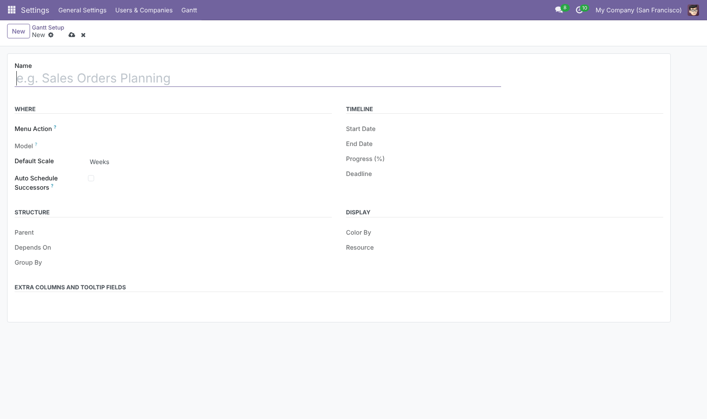
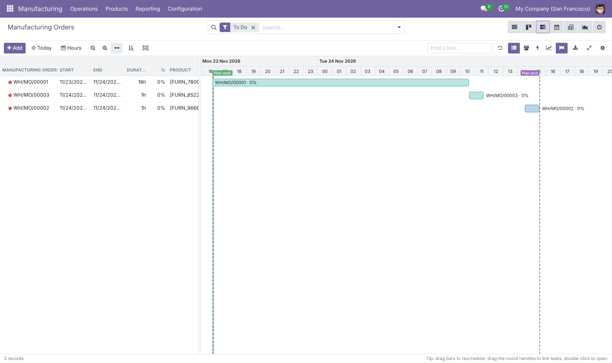
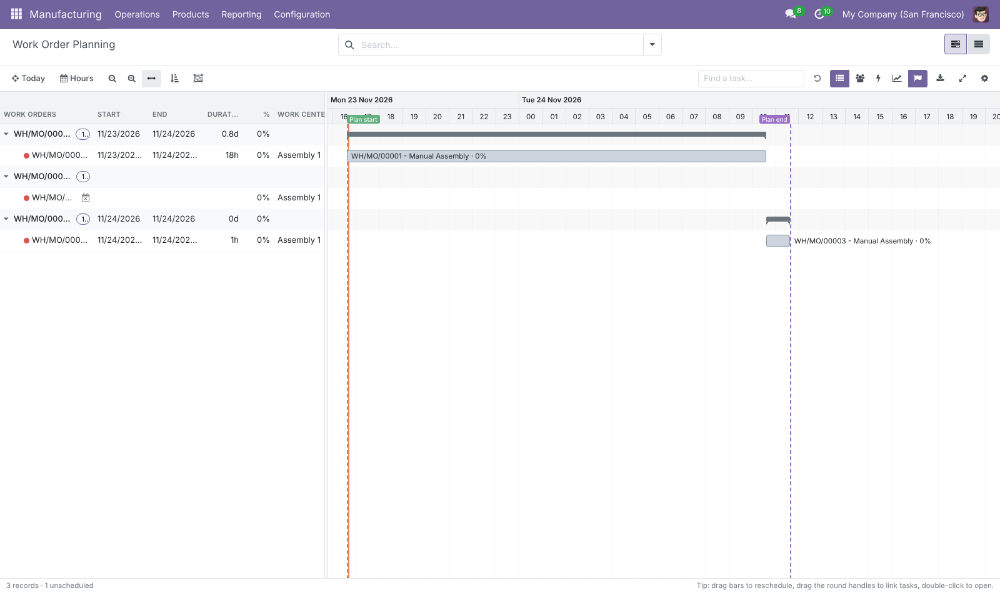
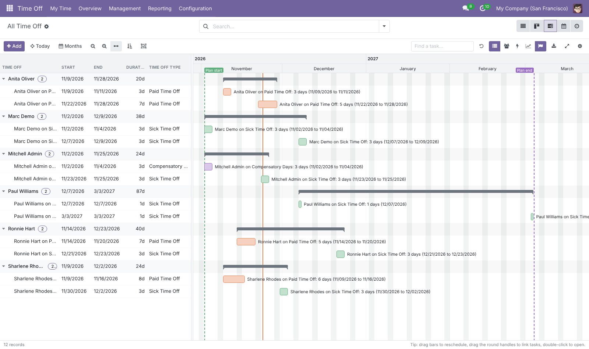
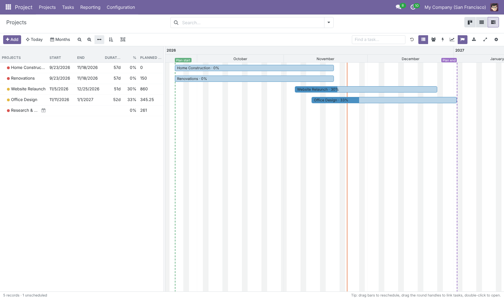
| Timeline | Hours, days, weeks, months, quarters, years; zoom, zoom to fit, today, full screen; days off and public holidays, optional hiding of selected days; plan and project markers |
| Bars | Move, resize, progress handle, milestones, stage colors, dynamic text and progress, deadlines, constraints, late bars, click to schedule |
| Dependencies | FS, SS, FF, SF with lag; drag to link; automatic scheduling of successors and sub-tasks; loop protection; critical path; undo |
| Task list | Hierarchy, groups with summary bars, sorting, find a task, add, sub-task, edit, delete, progress status dots, resizable or hidden |
| Analysis | Resource panel with capacity heat map, planned versus actual progress overlay |
| Exchange | Export to Excel, PDF, PNG, JSON, MS Project XML, Primavera P6, iCal; import from Excel and JSON |
| Configuration | Tooltip content, chart options, days off, 90% notifications, default scale, record limit; planning options per record; no-code Gantt Setup |
| Apps | Project (tasks and projects), Manufacturing (orders and work orders), Time Off, and any model |
Install Gantt View Pro from the Apps menu. The Project, Manufacturing and Time Off integrations are included and install automatically when those apps are present. A Gantt button then appears in the view switcher of tasks, projects, manufacturing orders, work orders and time off. Settings are under Settings > Gantt.
Can I use it on my own models? Yes, from Settings > Gantt > Gantt Setup, or by declaring an axs_gantt view.
Will it conflict with another Gantt app? No, it uses its own view type.
Does it respect access rights? Yes. Users only see and change what Odoo allows them to.
Is there an undo? Yes, for the last 30 date changes of your session.
Which import formats are supported? Excel (.xlsx) and the JSON produced by the export.
AXSync · hunain@axsync.com · axsync.com
Free bug fixes for supported versions. Customizations quoted on request.